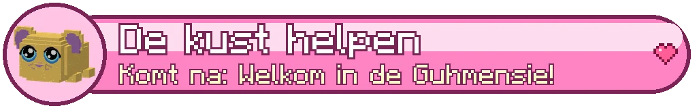

De Lampionkust zone 4
AreasGebieden
| AreaGebied | Level | SecretsGeheimen | CampfiresKampvuren |
|---|---|---|---|
| Lampionhaven ⚑ | 50-50 | 1 | |
| Het Knuffeltij-strand | 50-51 | 1 | |
| Strandfeesteiland | 51-52 | 1 | |
| Bloemeneiland | 51-52 | 1 | |
| Vliegereiland | 52-53 | 1 | 1 |
| Het Schildpadeiland | 52-53 | 1 | |
| De Koraalbaai | 53-54 | 2 | 1 |
| Vuurtoreneiland | 54-55 | 1 | |
| Het Wrak van de Vliegervanger | 54-55 | 1 | |
| Pierkop en de Opstijgpier | 55-56 | 1 | |
| Het Mysterie-eiland | 55-56 | 1 | 1 |
BossesBazen


CreaturesWezens
Grauwe Mopperkrab, Pruilrob, Stekelpluis, Mokmeeuw, Zeurslak, Bromvlieger, Grauwe Lampionkwal, Koraalkobold, Vliegerknecht, Mistmopje
Main storyHoofdverhaal
- Lampions aan de kust lv 50
- De Grote Knuffeltij lv 50
- Waar kom jij vandaan? lv 51
- De Grauwe Mistbank lv 52
- De Vliegervanger lv 53
- Het terug-naar-huis-feest lv 54
- De Opstijgpier lv 55
Side questsZijquests
- Een vlieger met oortjes Side questZijquest
- De grote vliegerwedstrijd Side questZijquest
- Wat bijt er vandaag? Side questZijquest
- Parels in de lagune Side questZijquest
- Het verdrietige zeemonster Side questZijquest
- Beachvolleybal! Side questZijquest
- Schelpenlimonade Side questZijquest
- Het licht van Opa Lichtstraal Side questZijquest
- Zoemende zwervers Side questZijquest
- Kransen voor het feest Side questZijquest
- Een snack voor Ouwe Dobber Side questZijquest
- Briefjes uit de mist Side questZijquest
- Soep voor iedereen Side questZijquest
- Lampions ophangen Side questZijquest
- Feest bij het kampvuur Side questZijquest
- Een briefje naar oma Side questZijquest
Sets
This zone is hidden by your spoiler setting (top right).Deze zone is verborgen door je spoilerinstelling (rechtsboven).